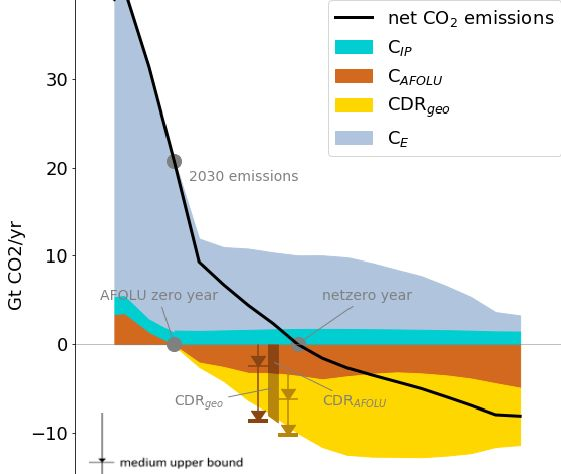

I. Verfassungsrechtliche Grundlagen
- Fossiles CO₂ ist klimaschädlich – Wissenschaftlicher Konsens (IPCC)
- Das 2°C-Ziel ist gesetzlich verankert – Pariser Abkommen, KSG
- Das CO₂-Budget für 1,5°C ist aufgebraucht – jede weitere Emission erfordert eine Entfernung (PIK, Copernicus, 3-Jahres-Ø > 1,5°C)
- Notwendigkeit von Carbon-Doxide-Removal seit 2015 bekannt - Seit dem Pariser Abkommen 2015 und dem IPCC-Bericht 2018 ist Carbon-Doxide-Removal wissenschaftlich notwendig, um nach einem Overshoot die Temperatur wieder zu senken und Kipppunkt-Kaskaden zu vermeiden (IPCC AR6, PIK, Tipping Points, duration matters)

CAFOLU Landnutzung, Forstwirtschaft und Landwirtschaft
CDRgeo technisches Carbon-Doxide-Removal
Quelle: Few realistic scenarios left to limit global warming to 1.5°C (PIK) (Original Paper PDF)
- Das BVerfG hat die Generationengerechtigkeit als Verfassungsprinzip bestätigt – Lastenverschiebung auf künftige Generationen verletzt deren Freiheitsrechte (BVerfG 1 BvR 2656/18)
- Daraus folgt eine verfassungsrechtliche Verpflichtung zu 1,5°C und Carbon-Doxide-Removal – nicht nur politisches Ziel, sondern Schutzpflicht (Art. 2 Abs. 1 GG i. V. m. Art. 20a GG)
II. Verwaltungsrechtliche Konsequenzen
- Emissionen erzeugen absolute, nicht anteilige Entfernungspflichten – 1t fossiles CO₂ emittiert bedeutet 1t CO₂ muss wieder entfernt und eingelagert werden, konkret der emittierenden Anlage zuordenbar (DEHSt Anlagenliste, Climate Trace, Map, Ariadne)
- Bisher keine explizite Regelung der Zahlungspflichten - CO₂ zu entfernen kostet Geld. Diese Kosten regelt weder das KSG noch das TEHG
- Carbon-Doxide-Removal-Kosten sind bezifferbar – 388-500 €/t (PIK BVerfG), Marktpreise 600-1.200 €/t
- Carbon-Doxide-Removal-Kosten sind nicht 'Kosten für sich allein' - sondern unvermeidbare Konsequenz eines physischen Umweltschadens (CO₂-Anreicherung der Atmosphäre, § 3 Abs. 4 BImSchG). Wenn § 5 BImSchG 'erhebliche Nachteile' verhindern soll, muss das die Beseitigungspflicht einschließen - sonst wird der Schaden auf künftige Generationen verschoben.
- Genehmigungen dürfen keine erheblichen Nachteile verursachen - Genehmigungsbedürftige Anlagen sind so zu errichten, dass keine erheblichen Nachteile für die Allgemeinheit hervorgerufen werden können (§ 5 Abs. 1 BImSchG), Abs. 2 besagt, dass Vorsorge getroffen werden muss (§ 5 Abs. 2 BImSchG).
- Carbon-Doxide-Removal-Kosten sind erhebliche lokale Nachteile – sie erzeugen konkrete Verbindlichkeiten bei Steuerzahlern im Zuständigkeitsbereich der Genehmigungsbehörde, nicht diffuse globale Klimafolgen wie im KSG, TEHG oder BEHG behandelt.
III. Haushaltsrechtliche Ausweispflicht
- Haushaltsgrundsätze verlangen Ausweis aller absehbaren Verbindlichkeiten – unabhängig von gesetzlicher Zahlungspflicht (§§ 7, 11, 17 BHO/LHO)
- Rückstellungspflicht gilt auch bei ungewissen Verbindlichkeiten – § 249 HGB, Analogie zu Pensionen, Renaturierung, Atommüll
- Betreiber verstoßen nicht gegen Verwaltungsrecht – sie haben Genehmigungen (z. B. GuD Altbach/Deizisau, GuD Eschweiler)
- Sind die Behörden verantwortlich? - Staatsanwaltschaften bestätigen, dass die Betreiber nicht verantwortlich sind, da sie Genehmigungen haben (Kleve, Mosbach, Leipzig, Rostock, Bayreuth 1 / Seite 2). Entsprechend obliegt es den Genehmigungsbehörden bzw. deren Regierungsbezirken, die Verantwortung für die Verbindlichkeiten zu übernehmen, mit denen ihre Steuerzahler belastet werden.
- Nirgends werden diese Kosten ausgewiesen – weder im Bundeshaushalt noch in Landeshaushalten (Stuttgart, Köln, Düsseldorf), noch in UVP-Verfahren (UVP), noch in Genehmigungen (Genehmigungsbescheid). Auch das TEHG oder das UVPG beachten diese Kosten bisher nicht (Düsseldorf). Die Kosten entstehen aber und sind reale Verbindlichkeiten.
Die Struktur- und Genehmigungsdirektion Nord (Koblenz/Rheinland-Pfalz) bestätigt, dass Vorhaben, mit nur geringen klimawirksamen Emissionen, nicht betroffen sind. - Zu klären ist, wer die Ausweispflicht trägt – Genehmigungsbehörden? UVP-Stellen? Bund? Land? Finanzministerium? "Eine solche Vermögensbedienungspflicht kommt den [..] Genehmigungsbehörden [..] nicht zu" (Freiburg), "Kosten- und Haushaltsfragen [sind] kein Bestandteil des immissionsschutzrechtlichen Genehmigungsverfahren[s]" (Stuttgart).
Eine Prüfbitte an den Bundesrechnungshof ergab: Der Bundesrechnungshof hat die Prüfbitte angenommen und an das zuständige Prüfungsgebiet weitergeleitet; ob daraus eine Prüfung wird, entscheidet dieses eigenständig und teilt es dem Hinweisgeber nicht mit. Für Landeshaushalte hat er auf seine fehlende Prüfungszuständigkeit hingewiesen (Antwort vom 3.3.26). Auf die Prüfbitte an den Rechnungshof Baden-Württemberg gab es diese Antwort am 7.4.2026.
Da der Bundesrechnungshof für die Länder nicht zuständig ist, habe ich die genehmigenden Stellen selbst gebeten, den Hinweis auf dem Dienstweg an das Finanzministerium NRW und den Landesrechnungshof NRW weiterzuleiten — sie kennen die genehmigten Anlagen und Emissionsmengen ihres Bezirks, die zuständige Haushaltsstelle nicht (MUNV NRW, BR Münster, BR Düsseldorf, BR Köln). Das Umweltministerium NRW hat die Weiterleitung mit Antwort vom 03.06.2026 abgelehnt — eine Rückstellung setze eine gesetzlich anerkannte Außenverbindlichkeit gegenüber Dritten voraus, die für CO₂-Entnahmekosten "derzeit auch nicht" bestehe. Daraufhin habe ich die Frage mit einer Prüfbitte an den Landesrechnungshof NRW direkt der landesrechtlich zuständigen Prüfstelle vorgelegt.
{kind=link}
IV. Der parlamentarische Weg
- Die Auskunfts-Sackgasse lässt sich nur parlamentarisch öffnen – Behörden erklären sich für nicht zuständig, und die Rechnungshöfe prüfen unabhängig und informieren Bürgerinnen und Bürger nicht über laufende Prüfungen. Eine Kleine Anfrage zwingt die Regierung dagegen zu einer öffentlichen, datierten und zitierbaren Antwort auf die Frage, wer die Ausweispflicht trägt. Ausgearbeitete Entwürfe liegen vor: Deutscher Bundestag (Anschlussfrage zur Antwort der Bundesregierung, Drs. 21/2193), Landtag Nordrhein-Westfalen, Landtag Baden-Württemberg.
- Den Rückkanal zum Rechnungshof haben nur Abgeordnete – über den Rechnungsprüfungsausschuss können sie erfahren bzw. anstoßen, ob der jeweilige Rechnungshof die bereits vorliegende Prüfbitte aufgreift – ein Weg, der Bürgerinnen und Bürgern verschlossen ist.
V. Strafrechtliche Betrachtung
- Vermögensschaden - Vermögensschaden kann bereits in der Begründung einer Verbindlichkeit liegen (BGHSt 21, 384, 385 - Provisionsvertreter-Fall; BGHSt 16, 220; BGHSt 23, 300).
- Das systematische Verschweigen begründet (hoffentlich) den Anfangsverdacht der Untreue oder des Betrugs – unabhängig davon, wer letztlich verantwortlich ist (§ 266 StGB, § 263 StGB).
Beispiele
Beispiel 1 - GuD Altbach/Deizisau verursacht 1.275.000 t/Jahr CO₂-Emissionen » 637.500.000 €/Jahr Carbon-Doxide-Removal-Kosten » 12,75 Mrd. € Vermögensschaden für Stuttgarter Kinder allein aus diesem einen Kraftwerk (Berechnung)Beispiel 2 - GuD Weisweiler verursacht 2.040.000 t/Jahr CO₂-Emissionen » 2 Milliarden €/Jahr Carbon-Doxide-Removal-Kosten » 20 Mrd. € Vermögensschaden für Kölner Kinder allein aus diesem einen Kraftwerk (Zulassung, FragDenStaat)
Die Frage ist:
Warum wollen Genehmigungsbehörden die vollständigen Kosten nicht ausweisen?
Warum haben Genehmigungsbehörden kein Interesse daran, die vollständigen Verbindlichkeiten für ihre eigene Region für die von ihnen genehmigten Anlagen offenzulegen?
Für die Hälfte der Kosten könnte man mit Solar & Wind die 20-fache Überkapazität schaffen, was selbst bei "Dunkelflauten" ganz ohne Speicher noch 3-5 mal mehr Leistung als diese Kraftwerke bei Vollast liefern würde.
Warum haben Genehmigungsbehörden kein Interesse daran, die vollständigen Verbindlichkeiten für ihre eigene Region für die von ihnen genehmigten Anlagen offenzulegen?
Für die Hälfte der Kosten könnte man mit Solar & Wind die 20-fache Überkapazität schaffen, was selbst bei "Dunkelflauten" ganz ohne Speicher noch 3-5 mal mehr Leistung als diese Kraftwerke bei Vollast liefern würde.
Unser Rechtssystem tut sich schwer mit der "anteilligen Schuld" an den globalen Klimafolgen.
Jetzt ist das anders, da wir
Die Welt ist jetzt so wie sie ist.
Entsprechend sollten die bestehenden Gesetze ab sofort ausreichend sein, um diese Verbindlichkeiten ausweisen zu müssen.
Der Gesetzgeber hat sich schliesslich einen vollständigen und wahren Haushalt per Gesetz gewünscht.
- die 1,5 Grad erreicht haben,
- eine Rückkehr zu 1,5 Grad wissenschaftlich nötig ist um Kippunkte zu vermeiden und
- jede weitere Emission fossilen CO2 1:1 zuordenbar ist zum Emittenten,
- ist jede weitere Emission fossilen CO2 1:1 auch wieder zu entnehmen, ganz unabhängig davon was andere machen.
Die Welt ist jetzt so wie sie ist.
Entsprechend sollten die bestehenden Gesetze ab sofort ausreichend sein, um diese Verbindlichkeiten ausweisen zu müssen.
Der Gesetzgeber hat sich schliesslich einen vollständigen und wahren Haushalt per Gesetz gewünscht.